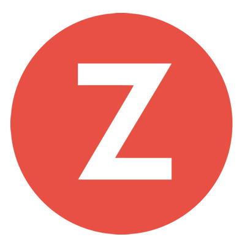
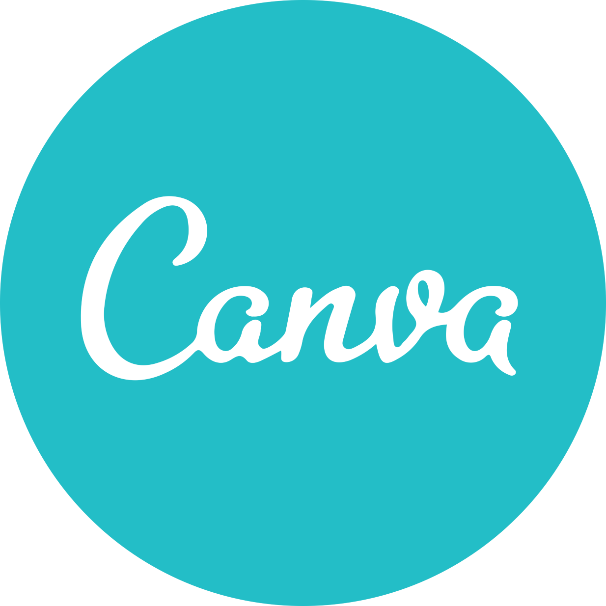
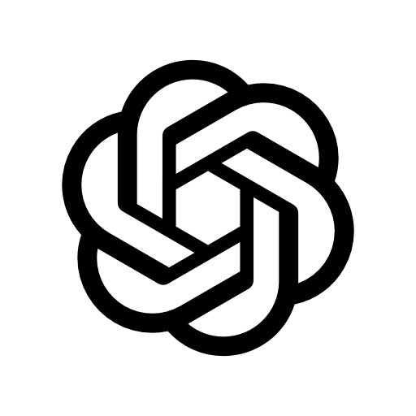
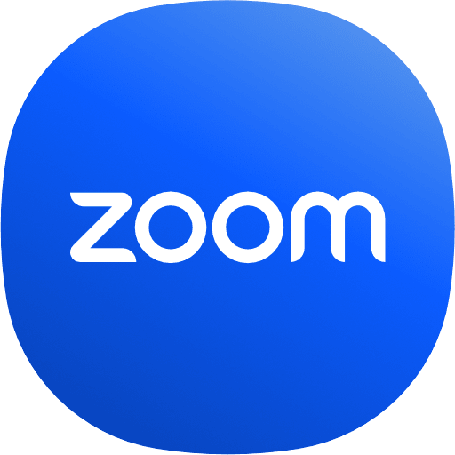
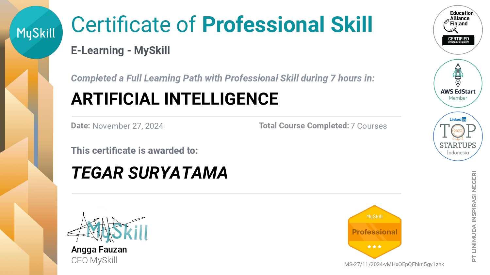
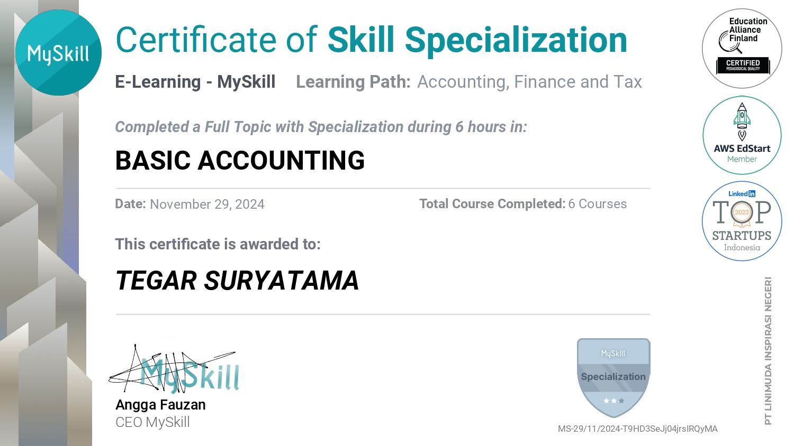
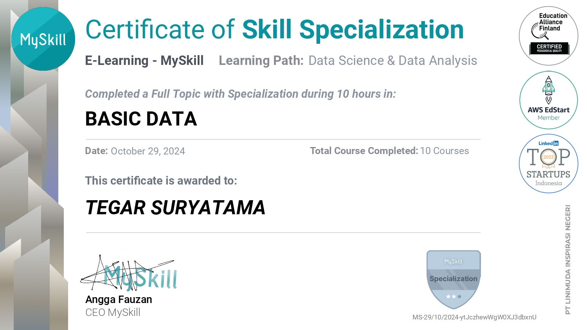
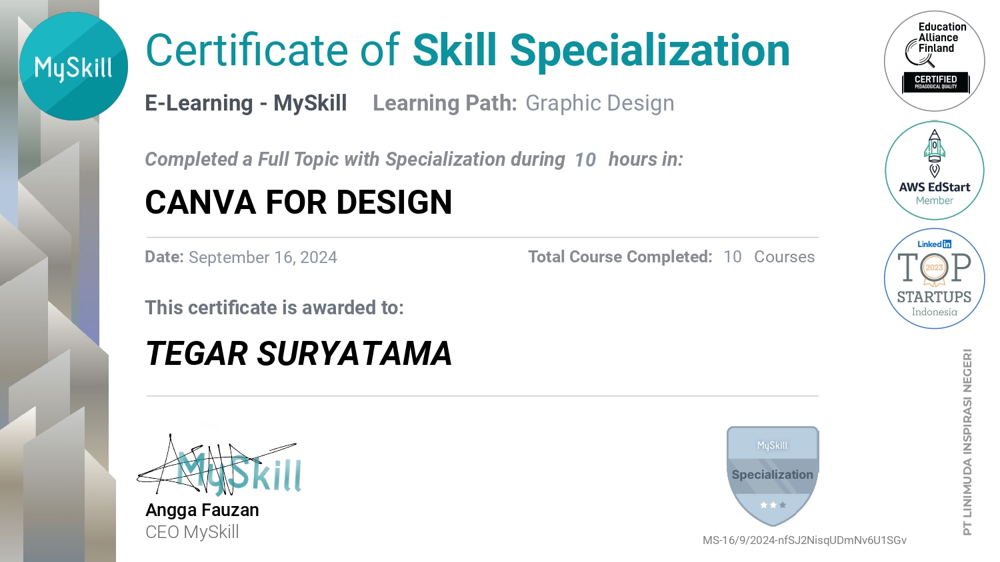

Tegar Suryatama
Profesional yang berfokus pada akurasi data administrasi, tata kelola stok gudang, pencatatan Zahir Accounting, serta integrasi solusi aplikasi web operasional untuk efisiensi sistem kerja. Memiliki ketelitian tinggi, cepat beradaptasi, dan siap berkontribusi secara konsisten bagi perusahaan.
HR Quick Scan (Ringkasan Kualifikasi)
Gambaran cepat keahlian dan kualifikasi utama untuk mempermudah evaluasi recruiter.
D3 Manajemen Informatika
Politeknik Negeri Sriwijaya (Polsri). Berpengalaman dalam logika pemrograman, basis data, dan sistem informasi.
Operasional Gudang & Dapur
Stock opname, sistem operasional dapur catering, verifikasi nota supplier, buffer stock, dan rekonsiliasi data.
Aplikasi & AI Utama
Microsoft Excel, Zahir Accounting, Web Dev, Antigravity AI, Google Workspace & Canva.
Siap Bergabung Segera
Terbuka untuk posisi Administrasi, Staf Gudang dan Pengelola Data.
Latar Belakang & Nilai Tambah
Saya adalah lulusan D3 Manajemen Informatika dari Politeknik Negeri Sriwijaya yang memiliki latar belakang terstruktur dalam teknologi informasi, administrasi perkantoran, dan manajemen pergudangan operasional.
Dalam pekerjaan sehari-hari, saya terbiasa melakukan pencatatan data secara akurat, pengawasan stok fisik, serta penggunaan software akuntansi dan spreadsheet seperti Microsoft Excel dan Zahir Accounting.
Saat ini, saya bertugas sebagai Administrasi Gudang di Koperasi Wanita Petra RU III Plaju, menangani pemeriksaan barang supplier, stock opname rutin, dan pencatatan transaksi pembelian. Saya juga berinisiatif merancang aplikasi web pendukung operasional seperti Aplikasi Kartu Stok Digital untuk monitoring persediaan harian serta System Operational Management Dapur KWP guna digitalisasi manajemen operasional katering dapur secara terorganisir.
Selain itu, melalui usaha mandiri Starmoon Labs dan penguasaan tools kecerdasan buatan seperti Antigravity AI, saya terus mengasah efisiensi alur kerja digital, kedisiplinan tenggat waktu, dan penyelesaian proyek secara solutif.
Ketelitian & Validasi Data
Memastikan data stok fisik, arsip faktur/nota pembelian, dan pencatatan di sistem akuntansi selalu sinkron tanpa selisih.
Inisiatif Digitalisasi Sistem
Mampu membangun tools web terapan (Kartu Stok & Manajemen Dapur KWP) untuk memangkas alur kerja manual dan mempercepat pemantauan data.
Kerja Sama Lintas Tim
Berpengalaman berkoordinasi langsung dengan pihak supplier, rekan tim lapangan kilang Pertamina, serta manajemen pengurus koperasi.
Pengalaman Kerja & Kontribusi
Administrasi Gudang
Koperasi Wanita Petra RU III Plaju
- • Pemeriksaan Barang Masuk: Memeriksa fisik barang dari supplier dan mencocokkan jumlah, mutu, dan spesifikasi sesuai nota pembelian.
- • Manajemen Gudang: Mengatur keteraturan gudang bahan kering, bahan basah, dan persediaan susu extrapuding agar stok terorganisir dan siap pakai.
- • Input Zahir Accounting: Mencatat faktur pembelian barang ke Zahir Accounting dan melakukan rekonsiliasi data dengan spreadsheet Excel.
- • Stock Opname Berkala: Melakukan audit fisik persediaan secara berkala guna memastikan kesesuaian data fisik dan pembukuan.
- • Inovasi Sistem Terapan: Merancang dan membangun sistem digital internal, yaitu Aplikasi Kartu Stok Digital untuk monitoring mutasi stok harian, serta System Operational Management Dapur KWP untuk mengelola alur operasional, bahan baku, dan distribusi katering dapur.
Food Handler
Koperasi Wanita Petra RU III Plaju
- • Menyiapkan dan mengemas porsi makanan untuk karyawan Pertamina RU III Plaju dengan standar kebersihan dan keamanan pangan ketat.
- • Melayani distribusi konsumsi di area kilang Pertamina tepat waktu sesuai jadwal operasional.
Digital Freelancer
Starmoon Labs
- • Mengelola usaha mandiri penyedia layanan digital: pembuatan CV ATS, pembuatan aplikasi berbasis web untuk mahasiswa, pembuatan tugas sekolah-kuliah dan pengolahan dokumen.
- • Membangun komunikasi langsung dengan klien, manajemen deadline, dan penjaminan kualitas hasil kerja.
Magang Administrasi
PT PLN (Persero) UID S2JB
- • Mengelola dan memperbarui database pelanggan menggunakan Microsoft Excel secara terstruktur.
- • Membantu digitalisasi arsip dokumen logistik, input data barang masuk/keluar, dan penyusunan laporan periodik.
Daftar Proyek & Aplikasi
Sistem aplikasi web operasional, sistem pendukung keputusan, dan pengolahan data.
Aplikasi Kartu Stok Digital Gudang
Sistem digitalisasi kartu stok barang gudang untuk pencatatan mutasi barang masuk/keluar, peringatan batas minimum stok, dan ekspor laporan mutasi.
System Operational Management Dapur KWP
Sistem terpadu tata kelola operasional dapur katering Koperasi Wanita Petra RU III Plaju untuk penjadwalan menu harian, monitoring bahan baku dapur, dan rekapitulasi distribusi porsi makanan.
Aplikasi Pengelola Bantuan PKH (Metode SAW)
Sistem seleksi dan manajemen penerima bantuan PKH dengan perhitungan otomatis Simple Additive Weighting (SAW) agar penilaian objektif dan transparan.
Aplikasi Penerimaan Beasiswa (Metode SMART)
Platform pendaftaran dan perangkingan beasiswa online berbasis Simple Multi-Attribute Rating Technique untuk mempermudah evaluasi berkas.
Aplikasi Checklist Perangkat IT Berbasis Web
Pencatatan dan audit berkala kondisi hardware dan software IT kantor, jadwal maintenance preventif, dan notifikasi kendala perangkat.
Aplikasi Verifikasi Surat Pembayaran Barang (SPB)
Sistem verifikasi keabsahan dokumen pengeluaran barang, pemesanan logistik, dan rekapitulasi surat jalan secara terstruktur.
Kamus & Transliterasi Aksara Ulu
Aplikasi kamus kata dan transliterasi teks Latin ke Aksara Ulu secara instan, berjalan 100% offline tanpa koneksi internet.
Layanan Administrasi Kantor Camat
Sistem pelayanan pengajuan surat menyurat warga secara online, upload dokumen persyaratan, dan tracking status permohonan.
Pengelolaan Data & Dashboard Excel
Pengolahan formula, ringkasan Pivot Table, dan visualisasi grafik dashboard untuk laporan operasional.
Administrasi Kantor & Dokumen Digital
Penyusunan berkas administrasi formal, korespondensi surat resmi kepegawaian, dan pengarsipan digital terstruktur di Google Drive.
Desain Visual & Media Kreatif Canva
Pembuatan materi visual presentasi bisnis, infografis data terstruktur, poster publikasi, dan materi branding promosi digital.
Portofolio Layanan Starmoon Labs
Koleksi pengerjaan pesanan klien nyata mulai dari pembuatan CV ATS profesional, pembuatan website, hingga penataan format dokumen.
Skill & Penggunaan Perangkat Lunak
Microsoft Office
Excel, Word, PowerPoint
Mahir mengolah formula Excel (VLOOKUP, Pivot Table, Laporan Stok) dan penyusunan berkas resmi.

Zahir Accounting
Software Akuntansi & Inventori
Input faktur pembelian barang masuk, penyesuaian barang, stock opname, dan sinkronisasi data.

Antigravity AI
AI Coding Agent & Prompt Automation
Memanfaatkan agen AI untuk percepatan penulisan kode, debugging sistem, otomatisasi alur kerja, dan pengembangan web modern.
Google Workspace
Docs, Sheets, Drive, Forms
Kolaborasi berkas digital daring, form pengumpulan data, pengarsipan cloud storage, dan sinkronisasi.

Canva Design
Media Kreatif & Infografis
Membuat materi visual presentasi perusahaan, banner promosi, infografis data, dan publikasi.

Generative AI Tools
ChatGPT, Claude, Prompting
Pemanfaatan AI untuk efisiensi analisis data, drafting naskah, otomatisasi formula Excel, dan riset.
Web Development
PHP, MySQL, Tailwind, JS
Membangun aplikasi web sistem informasi administrasi, kartu stok, manajemen dapur KWP, dan database.

Virtual Communication
Zoom, Google Meet
Penyelenggaraan rapat virtual, koordinasi tim jarak jauh, dan dokumentasi notulensi.
Sertifikasi Resmi Terverifikasi
Microsoft Excel, Word And PowerPoint

Artificial Intelligence (AI)

Basic Accounting & Finance

Basic Data Analysis

Canva for Visual Design
Karakteristik & Keterampilan Lunak
Manajemen Waktu & Prioritas
Menyusun skala prioritas pekerjaan, disiplin terhadap tenggat waktu, dan menjaga konsistensi alur kerja harian.
Komunikasi Efektif
Berkoordinasi secara jelas, santun, dan profesional dengan rekan kerja internal maupun supplier eksternal.
Problem Solving
Tanggap mencari solusi praktis atas kendala operasional pencatatan stok dan administrasi data.
Detail-Oriented & Teliti
Cermat dalam memeriksa detail nota pembelian, rekonsiliasi data stok opname, dan pengarsipan digital.
Adaptasi & Cepat Belajar
Cepat memahami alur sistem software baru, SOP perusahaan, dan dinamika lingkungan kerja.
Kerja Sama Tim
Mampu berkolaborasi aktif dengan berbagai divisi demi mencapai target operasional bersama.
Siap Berkontribusi Nyata Bagi Perusahaan Anda
Apakah perusahaan Anda membutuhkan kandidat yang teliti untuk Administrasi Gudang, Pengelola Data Excel Saya siap dihubungi untuk wawancara maupun diskusi lebih lanjut.